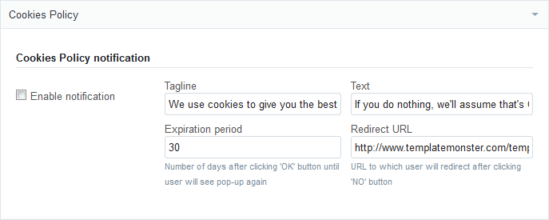

Благодарим Вас за приобретение шаблона Shopify. Данная документация состоит из нескольких частей и охватывает весь процесс настройки магазина Shopify с нуля.
Что представляет собой платформа Shopify?
Shopify — это онлайн-платформа для создания интернет-магазинов. Система построена по принципу SaaS (software as a service — программное обеспечение как услуга).
Что такое SaaS?
Это модель предоставления услуг, при которой разработчик берёт на себя все заботы по обслуживанию оборудования и программного обеспечения, предоставляя потребителю онлайн-приложение в аренду. То есть, вам не нужно искать хостинг, устанавливать и настраивать программное обеспечение — всё это делает разработчик. А вы получаете готовый интернет-магазин в несколько кликов.
Шаблон Shopify
Шаблон Shopify — это тема для оформления вашего магазина. Вы можете легко изменить вид вашего интернет-магазина с помощью установки шаблона, в несколько простых шагов. Шаблон содержит архив с файлами, которые вы можете изменять по своему усмотрению.
Структура шаблона
Комплект шаблона состоит из нескольких папок:
screenshots - папка со скриншотами шаблона.
theme###.zip - архив шаблона.
assets - эта папка содержит стили, скрипты, графические файлы темы.
config - папка содержит настройки темы.
settings.html - таблица настроек темы, доступных в Theme Settings.
settings_data.json - файл настроек темы; генерируется на основе settings.html, править этот файл вручную нежелательно.
layout - содержит файлы макета (layout).
theme.liquid - основной макет темы.
snippets - содержит сниппеты и виджеты, используемые в шаблоне.
templates - содержит шаблоны страниц магазина (страницы категории, продукта, корзины, и т.д.).
documentation.html - файл, содержащий ссылку на документацию.
Установка шаблона
Установка шаблона предельно проста и производится всего в три шага:
Шаг 1: Вход в аккаунт
Зарегистрируйтесь на shopify.com (или войдите в свой аккаунт, если уже зарегистрированы — для этого добавьте /admin к доменному имени своего магазина в адресной строке браузера и введите email/пароль).
Шаг 2: Загрузка шаблона
Перейдите в меню Themes. По умолчанию там содержится дефолтная тема.
Нажмите кнопку Upload a theme в верхней части страницы справа.
В появившемся диалоговом окне нажмите Browse (Обзор) и откройте папку шаблона на своём компьютере.
Выберите файл шаблона, он имеет вид theme###.zip.
Нажмите кнопку Upload. Через несколько секунд загруженный шаблон появится в перечне тем вашего интернет-магазина.
Шаг 3: Активация (публикация) шаблона
В нижней части загруженного шаблона есть кнопка Publish theme, нажмите её.
В появившемся диалоговом окне нажмите кнопку Publish.
Поздравляем! Вы успешно установили Shopify-шаблон, теперь он готов к работе. Можете проверить как он выглядит, перейдя на страницу вашего интернет-магазина.
Настройка магазина
С официальным руководством пользователя можно ознакомиться на странице Shopify Manual. В данном разделе содержится множество полезной информации, которая поможет вам в процессе настройки и эксплуатации интернет-магазина Shopify. Мануалы написаны на английском языке. Основные разделы:
Если вы так и не смогли найти ответ на интересующий вас вопрос — обратитесь в службу поддержки Shopify.
Настройка шаблона
Благодаря множеству опций вы можете производить тонкую настройку шаблона, по своему усмотрению изменяя гарнитуру, кегль и цвет шрифта, цветовую схему, изображения баннеров и слайдера, и многое другое.
Перейдите в раздел Themes. В установленном шаблоне вам доступны следующие опции:
Настройки темы (Theme Settings)
При клике на эту опцию откроется страница настроек шаблона, на которой вы можете изменять внешний вид и содержание шаблона.
Основные разделы страницы настроек
General
Здесь вы можете загрузить свой логотип, который будет использоваться в вашем интернет-магазине, а также иконку, демонстрируемую в адресной строке браузера (favicon). Также, доступны опции включения/отключения логотипа на странице оформления заказа и копирайта в футере.
Typography
Раздел настройки типографики шаблона. С помощью представленных опций вы можете выбрать нужный шрифт, а также его цвет и размер. Вы можете изменять:
основной шрифт страниц магазина
текстовые ссылки
заголовки
названия продуктов
описания продуктов
цена продуктов
Вы можете использовать как системные шрифты, так и Google Fonts.
Внимание! Размеры шрифтов необходимо указывать в пикселях (например, 12px), а цвета — в восьмеричном формате (например, #aabbcc; также, можно выбирать цвета из представленной палитры).
Colors
Управление цветовой схемой шаблона. Цвета необходимо задавать в восьмеричном формате (например, #aabbcc). Также, можно выбирать цвета из представленной палитры.
Gradients (опционально)
В этом разделе вы можете редактировать градиенты (если они предусмотрены дизайном шаблона). В наших шаблонах используются линейные вертикальные градиенты. Их можно изменять, достаточно задать два цвета, для верхней и нижней границ.
Layout & content settings
Основные настройки вывода контента. Вы можете:
выбрать главную навигацию магазина (выводится в верхнем горизонтальном меню)
управлять поведением боковых колонок (сайдбаров)
настроить вывод списка продуктов на главной странице и на странице категории
Megamenu
Наши шаблоны поставляются с виджетом Megamenu, с помощью которого вы можете построить мощное и функциональное главное меню своего магазина. Виджет имеет множество настроек, которые доступны в соответствующем разделе. Меню предусматривает 6 пунктов (Items), каждый из которых настраивается в соответствующем подразделе. К каждому пункту можно добавить ярлык с текстом (Item badge):
Пункт 1: обычная настраиваемая ссылка, без субменю.
Пункт 2: каталог продуктов. Задаётся ссылка на перечень всех продуктов, также доступно управление выпадающим субменю со списком категорий (Collections). Категории для отображения выбираются пользователем.
Пункт 3: блог. Блог выбирается пользователем, также доступно включение/отключение выпадающего субменю с перечнем последних записей.
Пункт 4: продукты со скидками. Задаётся категория, также доступно включение/отключение выпадающего субменю с перечнем продуктов из выбранной категории.
Пункт 5, пункт 6: обычные настраиваемые ссылки, без субменю.
Slider (опционально)
Раздел содержит настройки слайдера, представленного на главной странице вашего интернет-магазина (если слайдер предусмотрен дизайном шаблона). Вы можете включать/отключать слайдер, менять изображения, редактировать описания и ссылки, на которые ведут слайды.
Внимание! Для сохранения эстетической привлекательности шаблона рекомендуется придерживаться размеров изображений, указанных рядом с формой загрузки.
Custom blocks
В этом разделе вы можете редактировать баннеры, блоки ссылок, опции социальных аккаунтов, а также другой пользовательский контент, представленный в шаблоне. Для редактирования этих блоков не требуются знания вёрстки или программирования — настройка сводится к простым действиям, таким как ввод текстов, выбор иконок и загрузка изображений.
Google maps
Раздел содержит настройки управления отображения гугл-карт на страницах магазина.
Основные настройки:
Адрес. Задайте почтовый адрес нужного объекта, и виджет отобразит карту этот объект на карте, с маркером.
Функции показа карты. Вы можете включить или отключить отображение карты на главной странице или на странице контактов.
Olark chat
В наши шаблоны Shopify встроен виджет для отображения olark-чата, управлять настройками виджета можно в соответствующем разделе.
Для того, чтобы добавить Olark-чат на страницы своего магазина, выполните следующие действия:
Если вы планируете использовать несколько валют в вашем-интернет-магазине, вы можете настроить их вывод в этом разделе. Для этого отметьте переключатель Show currency selector и внесите трёхбуквенные коды валют (стандарт ISO 4217) в поле Currencies you wish to support.
Mailing list (опционально)
Раздел содержит инструменты настройки почтовых рассылок.
Payment methods
Управление отображением иконок-логотипов платёжных систем, которые показываются на странице оформления заказа. Вы можете включать/отключать иконки по своему усмотрению.
Cookies Policy
В наших шаблонах есть встроенный виджет для отображения информации об использовании Cookie Law. Управление виджетом производится в разделе Cookies Policy:

Вы можете включить/отключить виджет, редактировать тексты, период в течение которого сообщение не будет отображаться (при нажатии кнопки ОК), а также ссылку, по которой будет осуществлён переход в случае отказа пользователя (при нажатии кнопки NO).
Additional Layouts
Управление дополнительными макетами страниц. Добаить, удалить или редактировать макеты страниц вы можете в меню Themes > Template Editor > Layouts.
Редактор файлов (Template Editor)
При клике на эту опцию откроется онлайн-редактор файлов шаблона. Вы можете по своему усмотрению редактировать файлы разметки (файлы с расширением .liquid), скрипты (javascript), стили (css) и файл настроек (settings.html).
Дополнение. Куда обращаться за помощью, поддержкой и дополнительной информацией
Мы постарались сделать данную документацию как можно более доступной и понятной. Тем не менее, в случае возникновения любых сложностей с Shopify шаблоном, предложений по улучшению шаблонов или документации, с командой технической поддержки можно связаться следующим образом:
Решение возможных проблем с веб-шрифтами
Если вы столкнулись с проблемой отображения Google fonts на страницах своего магазина – попробуйте в адресе подключаемых шрифтов заменить fonts.googleapis.com на fonts.useso.com.
Например, для шрифта Open Sans это будет выглядеть так:
до замены
<link href='//fonts.googleapis.com/css?family=Open+Sans' rel='stylesheet' type='text/css'>
после
<link href='//fonts.useso.com/css?family=Open+Sans' rel='stylesheet' type='text/css'>